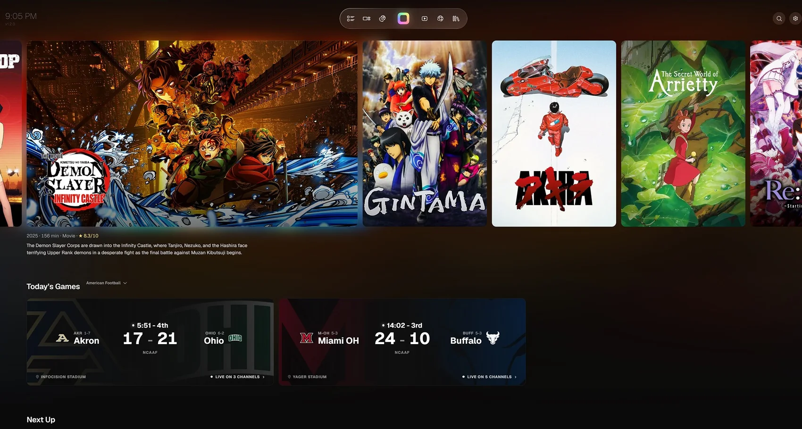
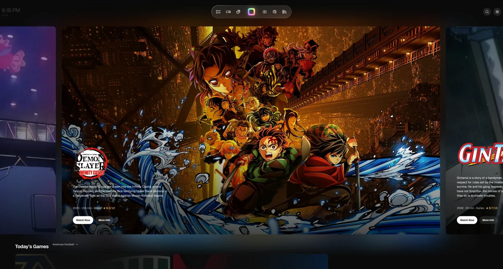
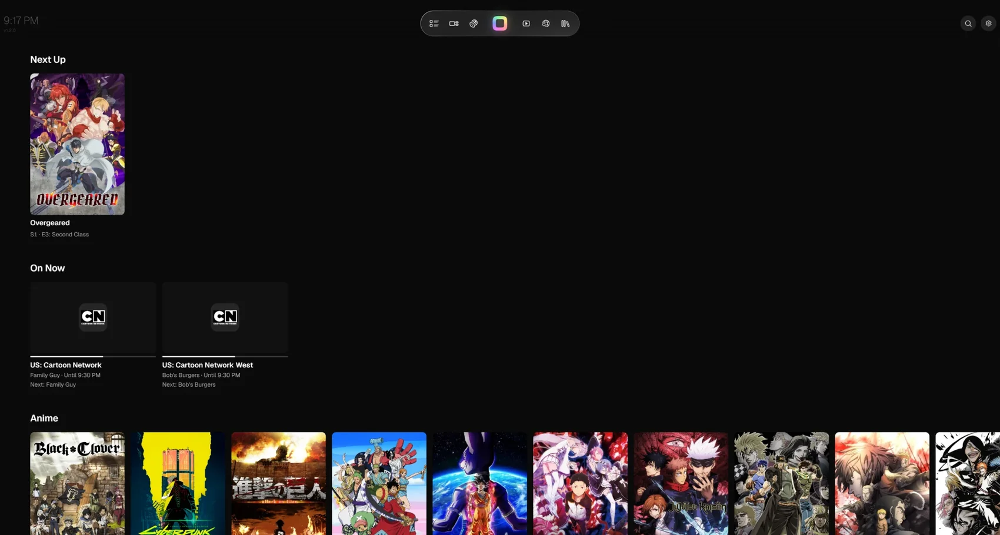
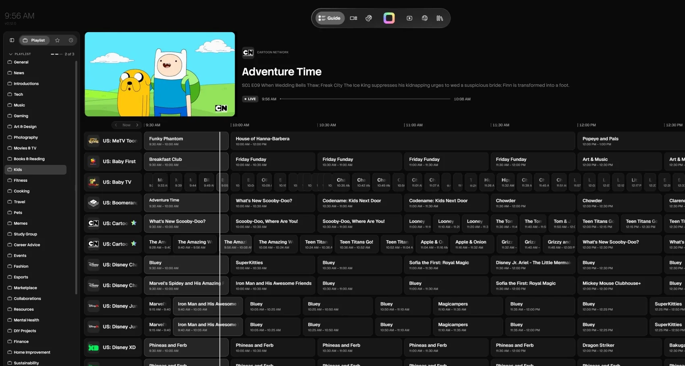
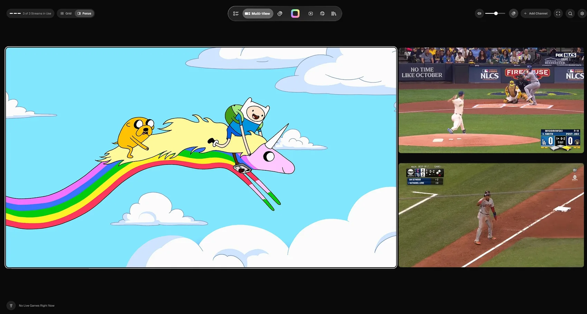
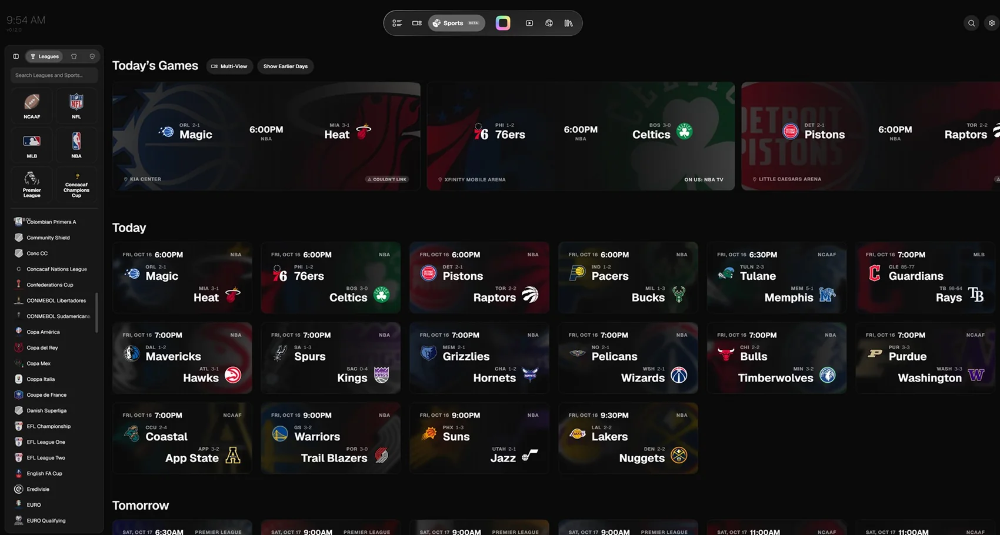
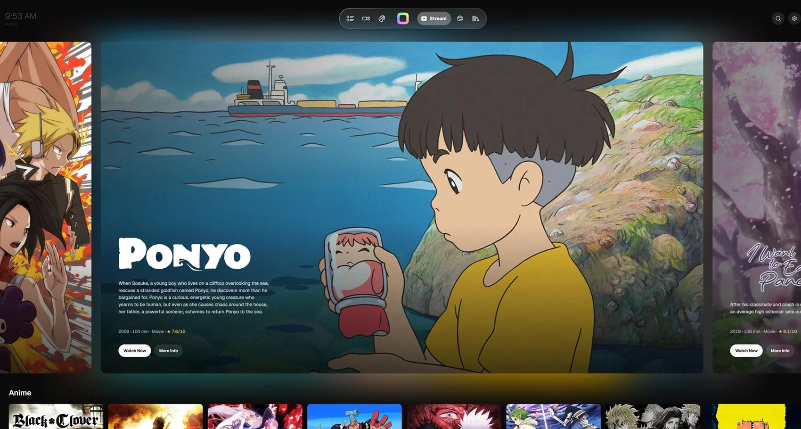
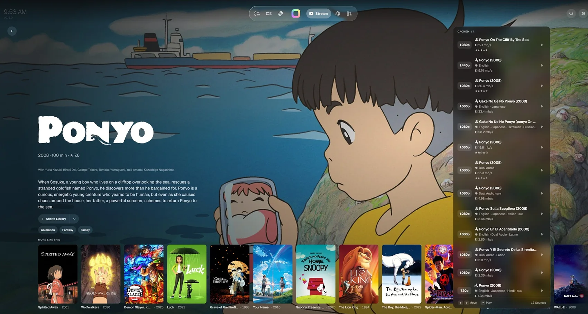
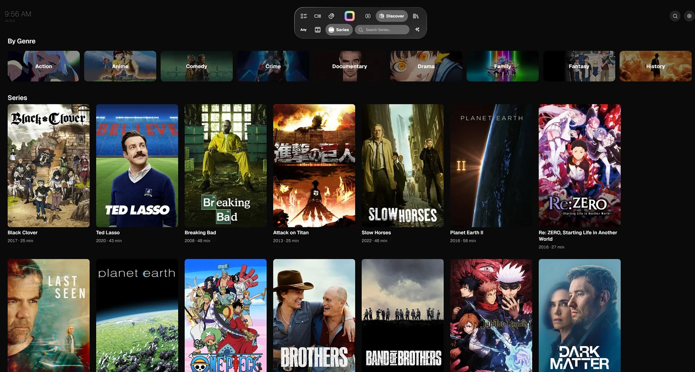
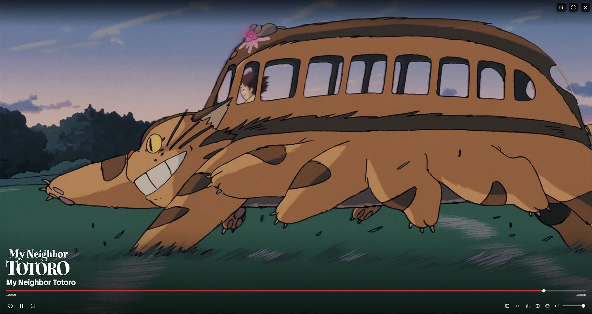

Home brings your films, shows, channels and games together in one free app for Windows. Add your own playlists, AIOStreams or Jellyfin server.
Free · Updates Itself · Windows 10 and 11, 64-bit



Click the logo for one page of your rows in your order: Continue Watching, your catalogs, starred channels, today's games, recordings and saved lists.
Every channel you add lands in one guide. See what's on now and next, scroll a whole day ahead, and star the channels you watch most.

Record what's on or right-click a programme in the Guide to record it later. Pause live TV and rewind it for hours.
Right-click a channel in the Guide to add it. Watch them in a grid, or make one big and keep the rest beside it.

See today's games for the leagues you follow, with the channels showing them.

Bring in your Xtream provider's movies and shows, sign in to AIOStreams, or add your own Jellyfin server. It all lands on the Stream page and Continue Watching keeps your place.



Everything plays in mpv, built right in. Surround sound works, and Skip Intro jumps past the opening.

Pick a theme: Prism, Velvet or Lagoon. Then pick an accent color or grab any color with the eyedropper.
Themes are in beta and more are on the way.
Themes are dark only.
Films and shows can open in VLC and your place still syncs.
Type a film or show's name and open it right from there.
Pick a genre in Discover to see what's popular in it, then mixes like Romantic Comedy.
Nope. BlammyTV is just a player. It doesn't come with any channels, shows or streams. You add your own IPTV subscription, playlists, AIOStreams or Jellyfin server.
Xtream Codes logins, M3U playlists, Stalker portals, AIOStreams and your own Jellyfin server. Add as many as you like. An Xtream login brings its movies and shows too. Stalker portals haven't been tested much yet.
Yup. Press Record while a channel plays or right-click a programme in the Guide. Recordings save to your PC and use one of your provider's streams while they run.
Nope. There's nothing to sign up for. Your sources stay on your PC, and any sign-ins are saved in Windows Credential Manager.
It's that simple.
If Windows says it protected your PC, click More info, then Run anyway. The app is code-signed, but Windows warns about a new app until enough people have installed it.
All Releases